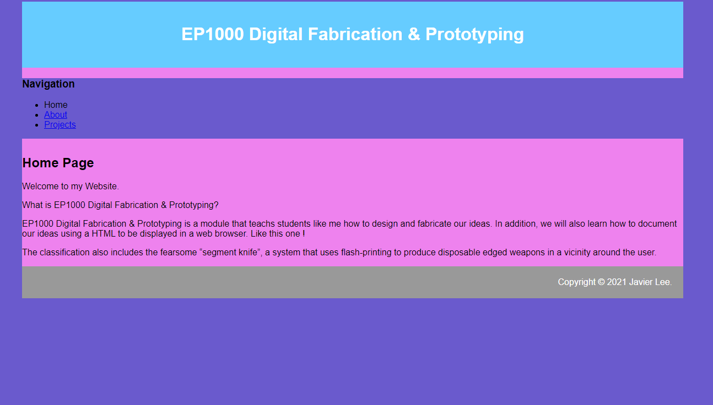

Introduction
This is my Arduino Test Log. What is it purpose? To document my practise of using the board and thinkcad.
A quick info dump about Arduino: An Arduino Embedded System is made of both software and hardware. It uses Software Tool such as an Intergrated Development System (IDE), Arduino progarmming language (Based on Processing), Development & Debugging Tools and Software libraries. It has Hardware such as a ATmel processor boards (and others), Shields which are add on modules, Sensors, Actuators and peripherals. It is also an Open Source Platform which means anyone and everyone can use it, which also means it is easier to get help thorugh online fourms and such.
Why do I use it?: It is Open Source. Thus I would be able to get help easily and there are tons of libraries made for it, which means if I need a function like to control a stepper motor as an example, I can look up a library that has premade code to control one. Saving me time. It is also inexpensive, lots of clones, 3rd party manufacturers making it an ideal learning / teaching material due to how easy it is to get. It also has a Simple, clear programming environment using GUI which is pretty good. Not to mention that it is also Cross-platform (Windows, MacOSx, Linux). Although I never found it useful, it means you can use it no matter what computer you are using which means it is accessible to everyone.
Week 2: 25 October 2021
This marks the first time I have ever made my website. It is not much since I only learnt what has been taught in class such as the titles, headers and main. Something tells me this is website of mine is most likely going to be a huge time sink on my end.
Week 3: 1 November 2021
After viewing Jake Wright's 'Learn HTML in 12 mins'. I have added a CSS file into website.
Week 4: 8 November 2021
I went over to check out W3school after being reccomended by a friend. I learnt how to add a navigation bar with a dropdown feature! I kinda like my new website after that. I have currently planned the lay out of my website including a Blog spot, Guides for my upcoming assignments a tool table listing all the software I am using and a tab for my final project for this module. I will most likely try to add the guides in during the course of the week although I kinda have to catch up with my school work.
Week 5: 15 November 2021
I finally got around to uploading my site to github! I was too tired today and forgot to take any screenshots. [oops.] I will try to add a guide as well as explain how I uploaded it to github. (Update from the furture: This picture shown below is me updating the current iteration of the website9/12/2021 to github.)
Week 6: 15 November 2021
So one of the biggest mistakes I made while making this website was how I formatted it. Due to my constant adding of gudies and other HTML files, I have to constantly Update the nav bar. This is slowly driving me insane beause once I want to add a new HTML file or update the location of another one, I will have to do the same thing for every file's navbar (Currently there are 8 HTML files). I will most likely have to find a solution this problem after my MSTs due to my rapidly increasing workload and upcoming exams.
Week 7: 22 November 2021
I have added a slideshow for my guides. This should lower down the large amount of pictures that filled my guides allow for less scrolling and will allow for my website to look more clean. However, there is a slight limitation to this addtion, I have yet to fully understand the code so I am only able to add 2 slideshows per file. Since some of my files "The Fusion 360 Guide" for exmaple, has over 16 pcitures. So I would need to divide the file into to smaller files so all the slideshow could work. Which will further add to the already increasing list of files I need to add (Currently there are 13 HTML files). I will most likely have to find a solution to this during the holidays.